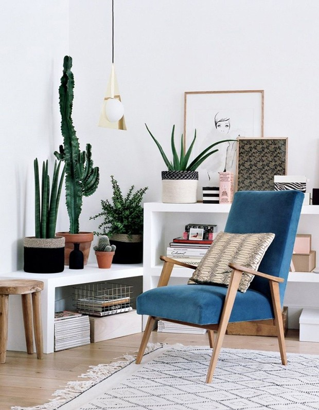

Cactos Brasileiros
Ambiente com Cactos
Acompanhe nossos
Ambientes Cactos
Visite nossos sate

Por que ter um cacto é bom ?
Clima
Pertencentes à família das cactáceas (cactaceae). Conseguem sobreviver em ambientes extremamente quentes ou áridos, pelo fato de terem a capacidade de acumular água em seus tecidos.
Durabilidade
Possuem expectativa de vida elevada, podendo sobreviver mais de 200 anos. Na região Nordeste do Brasil, é muito comum encontrar o cacto mandacaru (Cereus peruvianus).
Ambiente
Ao contrário do que algumas pessoas pensam, não rouba oxigênio. Quando ficar exposta ao sol, deve ser regada a cada 15 dias. Nos ambientes mais frescos, apenas uma vez ao mês já é suficiente, e quando a terra estiver seca.
Valores
Lojas de decoração e paisagismo, de utilidades domésticas, bem como supermercados, apresentam um valor bem camarada. 3 reais é a média de preço por unidade dos mini cactos.
Como plantar um cacto ?
1
2
3
4
5
6
8
9
10